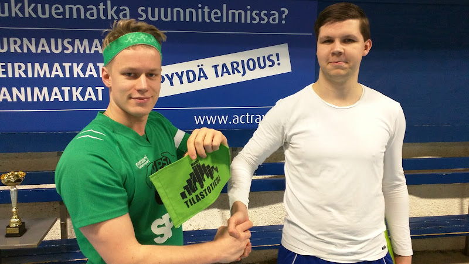
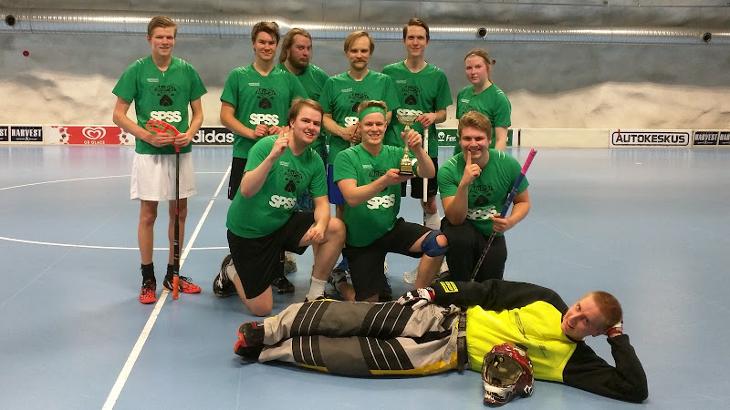

Spielführer Lauha ojentaa Moodin viirin KTTO:n urheiluvastaava Antti Komulle ennen ottelun alkua.
Kevään odotetuimman urheilutapahtuman aika koitti viimein keskiviikkona, kun Moodi ja KTTO marssittivat kovimmat pelimiehensä sekä kovimman pelinaisen Hakaniemen Isku-areenalle kamppailemaan ensimmäistä kertaa perinteisen Kevätklassikon voitosta.
Asetelma ennen ottelua oli selkeä: MoPSilla ei ollut yhtään salibandyvoittoa tämän vuoden puolelta ja luottopelaaja Sebu oli löytänyt sisäisen rintamakarkurinsa ja jänistänyt itselleen läheisen KTTO:n kohtaamisesta. MoPSi oli kuitenkin saanut kasaan kilpailukykyisen joukkueen ja pystyi peluuttamaan jopa kahta kokonaista hyökkäysketjua.
Omasta päästä vastasivat tutusti maalivahti Daniel Kari, sekä monissa liemissä keitetty, raudanluja luottopuolustuslinja Santeri Mikkonen - Matti Östman - Heikki Hyhkö. Hyökkäyksessä MoPSi-debyyttinsä teki Jenny Kumpula, joka sai kunnian olla ottelun ainoa naispelaaja.Ottelun alusta asti oli selvää, että tiedossa on tiukka kamppailu, molempien joukkueiden puolustaessa kurinalaisesti ja hyökäten silti aggressiivisesti lyhyellä kentällä.
Ottelun ensimmäisestä maalista vastasi MoPSi: maalipyssy Tuomas Reiterä pelasi tilanteen loppuun asti ja survoi lopulta maalin edestä MoPSin 1-0-johtomaalin. KTTO:n leiristä vaadittiin epäurheilijamaisesti maalin hylkäämistä potkuna, mutta viileä tuomari ei ollut lahjottavissa, sillä Moodin taloudenhoitaja Joni Oksanen oli maksanut tuomarin palkan jo ennen pelin alkua.
Maali antoi MoPSille itseluottamusta ja ensimmäinen erä olikin lopulta selvää MoPSin hallintaa. Reitsi lisäsi MoPSin johdoksi vielä 2-0 ja puolustus luuti omassa päässään vakuuttavasti Karin poimiessa varmasti KTTO:n laukaukset. MoPSin ote herpaantui kuitenkin hetkeksi ennen erätaukoa ja KTTO pääsi kaventamaan maalin edestä kahteen yhteen.
Toinenkin erä alkoi MoPSin kannalta vakuuttavasti ja painostus palkittiin ottelun ylivoimaisesti komeimmalla osumalla. Kuvitteellisesti ottelun parhaana pelaajana palkittu Östman näki aukon KTTO:n ryhmityksessä ja antoi ilmiömäisen petterinummelinmaisen läpisyötön, jonka MoPSin junioriakatemia Spielführer-jugendista kokoonpanoon nostettu Markus Lauha ohjasi kauniisti rystyllä ohi KTTO-veskarin. Juhlat eivät kuitenkaan jatkuneet pitkään. MoPSin ote alkoi lipsua ja KTTO pääsi jatkuvasti hyville tekopaikoille. Uhrautuva puolustus ja Karin torjunnatkaan eivät enää auttaneet, vaan KTTO nousi tasoihin erän loppuun mennessä.
Kolmas erä oli intensiivistä kissa ja hiiri -leikkiä. Ottelun MVP Östman vei MoPSin kahdesti johtoon, ensin vaparista läheltä maalia ja toisen kerran hienon kuljetuksen ja nousun jälkeen, mutta KTTO nousi kummallakin kerralla tasoihin. Alle puoli minuuttia ennen varsinaisen peliajan loppua ilman maalivahtia tehty 5-5-tasoitus räjäytti hetkellisesti KTTO-penkin ja katkaisi MoPSin mestaruusjuhlat ennen kuin ne olivat ehtineet alkaakaan. Tasoitus ei kuitenkaan murtanut MoPSia, vaan tarjosi Hakaniemen iltapäivään pikkuleijonien MM-finaalista tutun dramaattisen tuhkimotarinan käsikirjoituksen.
MoPSin onneksi voittaja ratkaistiin Unisportin välieristä poiketen jatkoajalla rangaistuslaukausten sijaan. Kokeneillakin pelaajilla oli tiukka ilme, kun viisikot marssivat kentälle tietäen, että se on kerrasta poikki. Tarjolla oli suuri sankarinviitta.
Urheilussa tähden ja supertähden ero on se, että supertähti ratkaisee otteluita. Paineista ja tilanteesta riippumatta. Sankarin viitan sovittikin lopulta harteilleen kukapa muukaan kuin joukkueen kapteeni, lagets kapten Patrik Lauha.
MoPSi painoi ankarasti päälle jatkoajan alusta lähtien ja montaa minuuttia ei tarvinnut odottaa potin räjähtämistä. Laidoilla viilettäneet M. Lauha ja Reiterä painoivat hyökkäyspäätyyn imien kolme KTTO:n pelaajaa mukanaan. Voitettuaan kulmakamppailun silmät selässä pelannut forsberg Reitsi pudotti pallon B-pisteen kaarelle hiipineelle sentteri Laineelle, joka painoi terävällä laukauksellaan pallon vastustamattomasti alakulmaan ja vapautti MoPSi-miehistön riemuisaan juhlintaan KTTO:n pelaajien yrittäessä sisäistää, että he olivat jälleen hävinneet MoPSille jatkoajalla.
Selvittyään railakkaan juhlinnan jälkeen lopulta lehdistötilaisuuteeen, pelin ratkaisija ei unohtanut antaa kunniaa hyvin pelanneelle vastustajalle: “Se oli isät vastaan pojat, oltiin ylivoimasia”, Lauha totesi. “Tän hetken tunnetila on et niiden ykkösketju oli meille fila”, komppasi MoPSi-valmentaja Erkka Easterlund siteeraten muuan suomalaista rap-artistia.

MoPSin kokoonpano Kevätklassikossa. Ylhäältä vasemmalta lukien M. Lauha, Reiterä, Antero Liukkonen, Hyhkö, Östman, Kumpula, Oksanen, P. Lauha, Mikkonen ja maalivahti Kari.
Seuraavan kerran MoPSi pelaa ensi viikon keskiviikkona Unisportin salibandysarjan pronssiottelussa.